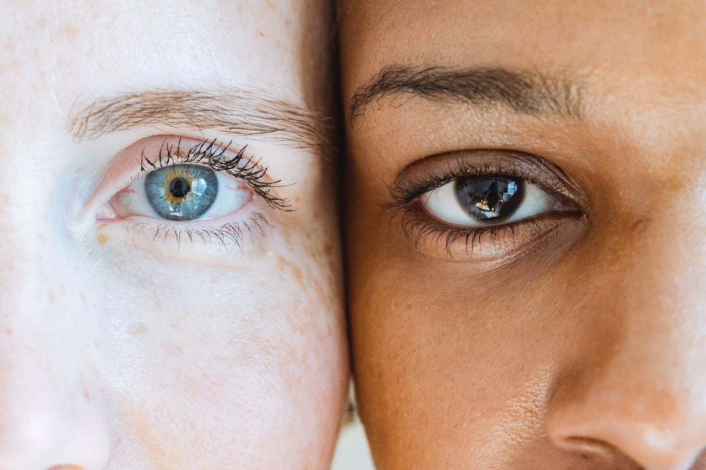

Biomedicina Estética
A Biomedicina estética é uma aréa atuação nova em relação aos seguimentos que o biomédico pode atuar. Reconhecida pelo Conselho Federal de Biomedicia em 2011, tem como objetivo principal procedimentos estéticos no rosto e corpo e visam garantir sáude e bem estar.
Por isso, quem faz pós e se habilita nos segmentos dessa área, pode cuidar de toda a parte que envolve escolher e aplicar tratamentos nas pessoas. Ou seja, com base no histórico de saúde do paciente, além de seu objetivo estético, por exemplo, eliminar celulite, você vai definir e aplicar as melhores técnicas para entregar os resultados esperados.
Além disso, você também se tornar responsável por acompanhar os efeitos do tratamento e a saúde das pessoas. Por exemplo, caso seja necessário, você pode interromper tratamentos e propor novas soluções. Legal, né? E isso é só a parte mais voltada para beleza de o que se faz em Biomedicina Estética!